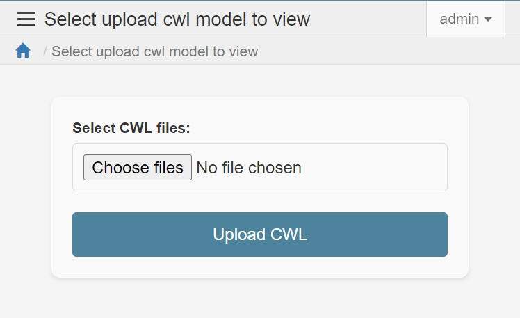
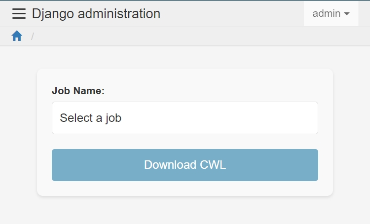
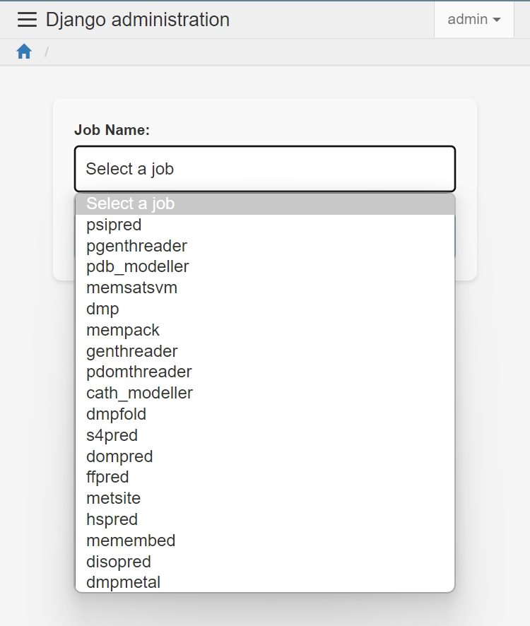

CWL Upload and Download¶
CWL Upload Page¶
The CWL Upload Page allows users to upload multiple CWL files. The system processes these files in the background and creates new tasks or jobs based on the CWL file types.
CWL Download Page¶
 The CWL Download Page enables users to select existing jobs in the system and generate multiple executable CWL files.